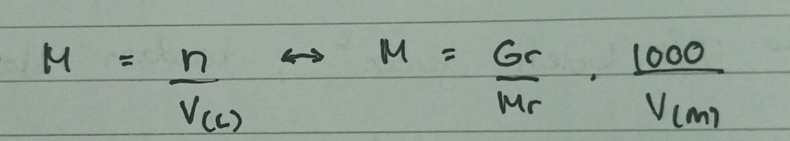
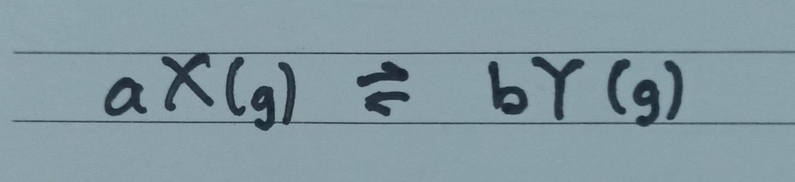
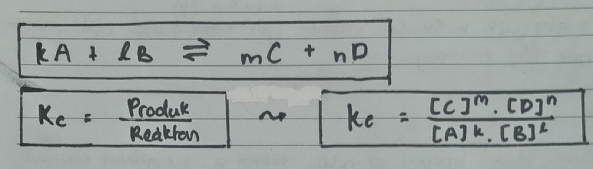
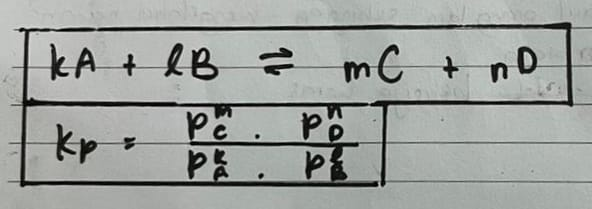
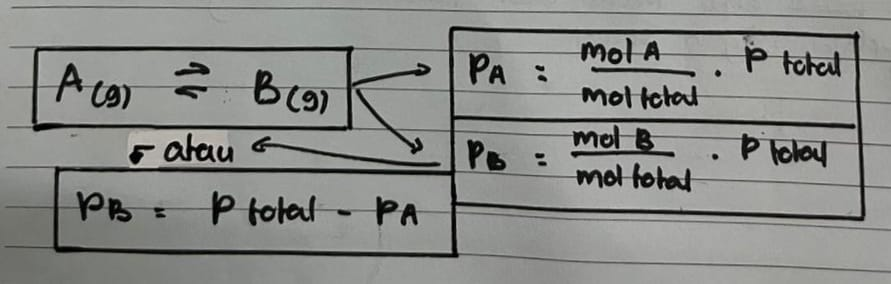
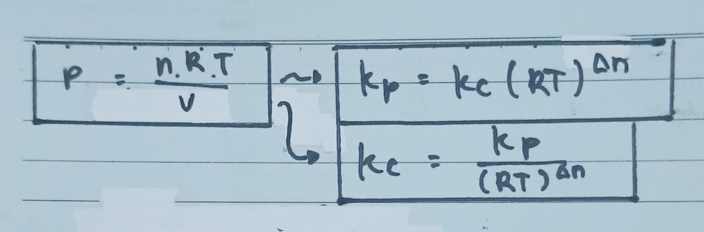
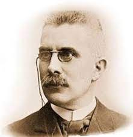

Konstanta Kesetimbangan
→ Konstanta kesetimbangan menyangkut perbandingan konsentrasi, yaitu~>

Keterangan :
- M = Molaritas
- n = Mol
- Mr = Molekul Relatif
- V = volume (L/ml)
→ Fungsi dari kita memahami konstanta kesetimbangan, yaitu~>
a. Menentukan arah reaksi.
b. Menentukan faktor yang mempengaruhi reaksi.
c. Menentukan kesetimbangan tentang sudah atau belumnya setimbang.
d. Menentukan komposisi zat-zat ketika setimbang.
→ 2 jenis tetapan kesetimbangan, yaitu~>
A. Tetapan Kesetimbangan Konsentrasi (Kc).
B. Tetapan Kesetimbangan Tekanan (Kp)
Persamaan Reaksi
Sebelum menuju ke tetapan kesetimbangan, kita harus mengetahui logika persamaan reaksi.
pada saat gas X sudah berada dalam kondisi setimbang dengan gas Y, maka persamaannya bisa ditulis
sebagai berikut :

ketika gas X setimbang dengan gas Y, maka kecepatan pembentukan gas X juga pasti sama dengan kecepatan pembentukan kembali gas Y.
Dari gambar diatas tiap gas X berubah sebanyak a mol, maka Y juga akan berubah sebanyak b mol. Perbandingan mol A dan mol B akan selalu tetap.
Tetapan Kesetimbangan Konsentrasi (Kc)
Disini kita akan mencari nilai Konsentrasi (Kc) adalah dengan membagi produk berpangkat koefisien yang dimiliki masing-masing unsur atomnya
dengan reaktan berpangkat koefisien yang dimiliki masing-masing unsur atomnya juga. Berikut rumus yang digunakan :

Keterangan :
- Kc = Tetapan Kesetimbangan Konsentrasi
- [A], [B], [C], [D] = Konsentrasi Pada Kesetimbangan
- k, l, m, n = Koefisien
Tetapan Kesetimbangan Tekanan (Kp)
Tidak jauh berbeda untuk rumus Kp dengan Kc namun lebih kompleks. Untuk mencari nilai Tekanan (Kp) adalah juga dengan membagi tekanan parsial
produk dengan tekanan parsial reaktan yang sudah dipangkatkan dengan masing-masing koefisien. Berikut rumus yang digunakan :

Keterangan :
- Kp = Tetapan Kesetimbangan Tekanan
- P(A), P(B), P(C), P(D) = Tekanan Parsial
- k, l, m, n = Koefisien
Sebelum menggunakan rumus diatas, kita harus mengetahui rumus untuk mencari masing masing tekanan parsialnya untuk dimasukan kedalam rumus.
Berikut rumus untuk mencari masing-masing tekanan parsial :

note :
-
Kita tidak dapat mencari Kesetimbangan Tekanan (Kp) jika tidak mengetahui setiap tekanan sama seperti halnya bahwa,
"Cinta tidak bisa dimulai jika tidak adanya kepastian :]"
Hubungan Kesetimbangan (Kp) & (Kc)
Kita dapat menurunkan rumus gas ideal (hk.Boyle - Charles) untuk menghubungkan besaran Kc dan Kp. Sehingga rumus penghubung antara Kesetimbangan Tekanan
dengan Konsentrasi dan sebaliknya sebagai berikut :

Keterangan :
- P = Tekanan Atom (atm)
- V = Volume (L)
- n = mol
- R = 0,082 (L atm/mol K)
- T = Suhu (K)
- Δn = Selisih koefisien (produk - reaktan)
Pergeseran Kesetimbangan
Coba kita berpikir apakah jika reaksi memang sudah berada dalam keadaan setimbang akan terus seperti itu?
Bisakah kesetimbangan itu diganggu? Bisa dong kan kata Ariel Noah dalam lagunya “Tak ada yang abadi”, begitupun kesetimbangan.

Nah yang pernah memikirkan hal ini sampai jauh adalah Henri Louis Le Chatelier (1850-1936). Dia mempunyai teori bahwa :
” Bila terhadap suatu kesetimbangan dilakukan suatu tindakan (aksi) maka sistem itu akan mengadakan reaksi yang cenderung mengurangi pengaruh aksi tersebut.”
Dengan cara menggeser ke kiri yaitu arah reaktan atau menggeser ke kanan yaitu arah produk. Nah disini kami akan menjelaskan 4 faktor-faktor yang mempengaruhi pergeseran kesetimbangan, yaitu~>
A. Perubahan Konsentrasi
→ Ketika konsentrasi PRODUK Bertambah, reaksi bergeser Ke Arah REAKTAN
→ Ketika konsentrasi REAKTAN Bertambah, reaksi bergeser Ke Arah PRODUK
Contoh ~>
N2(g) + 3H2(g) ↔ 2NH3(g)
Jika N2 atau H2 ditambah, maka kesetimbangan akan bergeser ke arah NH3 (produk). Sebaliknya jika NH3 ditambah, maka kesetimbangan akan bergeser ke arah N2 atau H2 reaktan (kiri).
Jika konsentrasi unsur/senyawa di salah satu ruas dikurangi, maka kesetimbangan akan bergeser ke arah dirinya sendiri.
Misalnya
N2 atau H2 kita kurangi, maka kesetimbangan akan bergeser ke arah N2 dan H2 (reaktan). Sebaliknya jika NH3 dikurangi, maka kesetimbangan akan bergeser ke arah NH3 (produk)
B. Perubahan Tekanan(P) & Volume(V)
→ Ketika P↑, maka V↓, sehingga reaksi bergeser ke yang Koefisiennya Kecil
→ Ketika konsentrasi Reaktan Bertambah, reaksi bergeser Ke Arah Produk
Contoh ~>
N2(g) + 3H2(g) ↔ 2NH3(g)
Disini kita akan mengetahui bahwa :
-
Yang Koefisiennya kecil adalah Produk, sedangkan yang koefisiennya besar adalah Reaktan.
-
Artinya, jika Tekanan di ruangan tersebut diperkecil, maka Jumlah N2 & H2 BERTAMBAH.
-
Cara untuk menambahkan produk adalah dengan Memperbesar Tekanan atau Memperkecil Volume.
C. Perubahan Suhu (T)
→ Pada reaksi Endoterm (ΔH +), jika suhu dinaikkan (T↑), maka reaksi bergeser ke arah PRODUK
→ Pada reaksi Eksoterm (ΔH -), jika suhu dinaikkan (T↑), maka reaksi bergeser ke arah REAKTAN.
Contoh ~>
N2(g) + 3H2(g) ↔ 2NH3(g)
Disini kita akan mengetahui bahwa :
-
Berdasarkan Perubahan Entalpi reaksinya, reaksi tersebut termasuk reaksi Eksoterm.
-
Artinya, jika suhu diturunkan, maka yang terjadi adalah NH3 Bertambah.
-
Apa yang terjadi pada nilai KP reaksi tersebut jika reaksi tersebut dilakukan pada suhu tinggi?
Nilai KP akan menjadi rendah.
D. Penambahan Katalis
→ Penambahan Katalis TIDAK menggeser kesetimbangan.
→ Katalis hanya MEMPERCEPAT terjadinya kesetimbangan.
Contoh ~>
N2(g) + 3H2(g) ↔ 2NH3(g)
Disini kita akan mengetahui bahwa :
-
Jika dilakukan penambahan katalis, maka bagaimanakah pergeseran reaksinya?
Tidak terjadi pergeseran reaksi.
-
Apakah pengaruh dari penambahan katalis pada reaksi tersebut?
Kesetimbangan akan terjadi lebih cepat.
Demikian semua materi kesetimbangan kimia untuk kelas 11. mudeng atau mubenggg~? Jika ada yang ingin ditanyakan bisa menghubungi nomor dibawah ini!